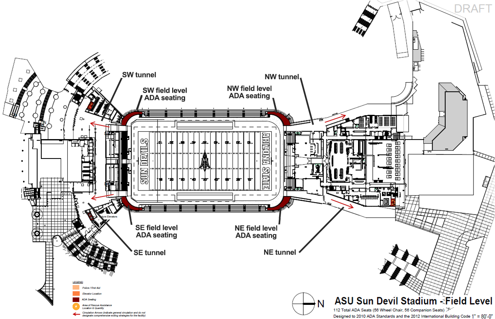

Sun Devil Stadium
500 E Veterans Way, Tempe AZ 85287
Emergency Evacuation Plan
In the event of a campus emergency, this plan is designed to assist in the safe evacuation of students, faculty, staff, and visitors from the stadium. This plan establishes the protocols for a safe and orderly evacuation of people due to a hazard such as but not limited to (severe weather event, fire, hazardous material spill, terrorist act, building maintenance issue, etc.) that threatens the University and Sun Devil Stadium.
Evacuation Plan
- Building Name: Sun Devil Stadium
- Building Number: STAD
- Plan Lead (Name and Phone): TBD
- Date Prepared: May 2022
Fire Evacuation Procedure
Step 1: If a fire or any type of emergency exists.
Individual who discovers fire must ensure Steps 2 and 3 occur before attempting to fight an incipient fire using the PASS, (Pull, Aim, Squeeze, and Sweep) method.
Step 2: Activate the fire alarm by pulling the red pull station.
Designated Rescue Areas
If an occupant is unable to evacuate from above and or below the grade level, they must proceed to the closest and safest shelter in place area. Inform ASU Police Dispatch Center by calling 9-1-1 of their location and that they are unable to leave the facility.
Designated Areas of Rescue Assistance locations are to be established on each floor above and or below the grade level in the Stadium.
Step 3: Call 9-1-1 from a campus telephone and or cell phone.
When a confirmed fire exists, it is critical to inform ASU Police Dispatch Center of the following information: Report exact location of fire to include name of facility, level of facility, section number or room number of location.
Step 4: Evacuate the building whenever the fire alarm sounds.
Close any doors leave the building and relocate to a safe, designated area for accountability.
Step 5: Assemble at safe location and verify accountability.
Notify emergency response personnel (ASU Police / (IC) Incident Commander) with information if occupants are still located inside or in a rescue area.
Step 6: Do not re-enter until authorized by emergency personnel.
Other emergency issues
Refer to Asu Emergency Response Guide.
Hazardous equipment and processes should be shut down unless doing so presents a greater hazard. Close doors upon leaving area.
- Evacuate to the nearest and safest exit. Keep doors closed to help slow the spread of smoke and fire.
- Person(s) with access and functional needs, refer to the Emergency Evacuation for Persons with Disabilities section for additional evacuation options.
- Evacuation note: only take items of extreme importance from your work space and only take those items if they can be removed safely (i.e. car and house keys, medication, and wallets/ purses). Do not remove large or bulky items, photographs, etc.
- Refer to your Emergency Response Guide (ERG) for more details related to fire/evacuation and other emergency scenarios.
Floor Monitors / Fire Wardens
- On hearing the fire alarm, monitors should immediately render the area they are in as safe according to fire evacuation procedures.
- After allowing time for the main body of people to evacuate, and only if safe to do so, monitors should then check the rooms/seating locations in the immediate area. Working through the rooms/seating areas systematically and closing doors if needed as each area is cleared.
- Supervisors should be assigned to predetermined locations within the stadium to assist individuals to a designated rescue area, stair landing, or with evacuation procedures.
- Monitors should take the First Aid Kit and the AED closest to the department.
- When all rooms/seating listed on the fire evacuation plan have been checked clear, monitors must leave the building/stadium via the nearest available exit.
- Communicate whether all patrons/staff attending the event have exited the building/stadium to senior management person and to emergency personnel.
Designated Floor Monitors / Fire Wardens:
- TBD: North Locker Room/Parking
- TBD: Field/SAF
- TBD: Suites/Press box
- TBD: Main Concourse/Upper Concourse
- TBD: South Gates/CSAC
- TBD: North Gates
- TBD: East Clubs
- Proem Supervisors: Areas of Rescue Assistance Locations noted within plan.
Each ASU department hosting an event at the Stadium must complete all appropriate contact information.
Emergency Evacuation for Persons With Disabilities
This section provides a general guideline of evacuation procedures for persons with disabilities. It is possible that an individual with a disability may require additional assistance or guidance during an evacuation. The person assisting an individual with a disability to evacuate the Stadium should ask the individual what his/her needs are before assisting. Staff, students and visitors with disabilities have been included in the development of this plan.
Individuals who feel they may need special assistance in the event of an evacuation may wish to identify the nearest Stadium personnel representative at the beginning of the event.
Note that individuals with unobservable disabilities may or may not self-identify before an emergency. These individuals may need additional help during emergency situations, including moving about the Stadium, locating and using evacuation resources such as communication devices and elevators, and reading and understanding Stadium signage. Such disabilities may include, but are not limited to:
- Learning disability
- Arthritis
- Asthma
- Cardiac condition
- Chronic back problems
- Psychological disability
Prior planning and practicing of emergency evacuation routes are important in assuring a safe evacuation.
Specific Plans
Mobility Impaired - Wheelchair
Persons using wheelchairs should utilize elevators on site to exit the facility or move to an Area of Rescue Assistance location designated by posted signage when the alarm sounds. Fire and Medical will be sent to the individuals in these designated areas.
Mobility Impaired - Non-Wheelchair
Persons with mobility impairments, who are able to walk independently, may be able to negotiate stairs in an emergency with minor assistance. If danger is imminent, the individual may wait until the heavy traffic has cleared before attempting the stairs. If there is no immediate danger (detectable smoke, fire, or unusual odor), the person with a disability may choose to stay in the facility, using other options listed below, until the emergency personnel arrive and determine if evacuation is necessary.
In the case that the elevators are not working, any persons with mobility impairments unable to utilize stairs, should move to an Area of Rescue Assistance location designated by posted signage on each level of Sun Devil Stadium. Fire and Medical will be sent to the individuals in these designated areas and assist them with the evacuation process.
Hearing Impaired
Sun Devil Stadium is equipped with fire alarm strobe lights to facilitate an alarm warning for the hearing impaired. Reasonable accommodations for persons with hearing impairments may be met by modifying the building fire alarm system, particularly for occupants who spend most of their day in one location. Closed captioning is provided on the North and Southwest video boards on game day. Additionally, if patrons have access to phones with internet service they can access closed captioning on their phones. The closed captioning link is: https://www.eegicap.com/captioncast/
Visually Impaired
Most people with a visual impairment will be familiar with their immediate surroundings and frequently traveled routes. Since the emergency evacuation route may be different from the commonly traveled route, persons who are visually impaired may need assistance in evacuating. The assistant should offer their elbow to the individual with a visual impairment and guide them through the evacuation route. During the evacuation the assistant should communicate as necessary to assure safe evacuation.
Basic evacuation options for persons with disabilities
Persons with disabilities have four basic evacuation options:
Elevator evacuation
Utilize nearest elevator to ground level and continue to the outside safely at ground level away from stadium structure.
Horizontal evacuation
Exit one building to another by using an exit passageway or go directly to the outside safely at ground level away from stadium structure.
Area of Rescue Assistance
Areas of Rescue Assistance are identified on all building floor plans if the building has floors above and or below the grade level exit. Area of Rescue Assistance are meant to be used for persons with disabilities or injuries who cannot exit from above and or below the grade level on their own or with the assistance of another or the elevator.
In the case of an evacuation emergency, anyone who needs rescue assistance should proceed to the nearest Area of Rescue Assistance as noted with signage strategically placed in Sun Devil Stadium. Stadium staff with two-way communication will be in place to relay this location to on-site emergency services. Locations for the Areas of Rescue Assistance are located on the maps provider later on this document.
Stay in Place
Unless you are in imminent danger, it may be safest to remain in a shelter in place designated area. With this approach, the person may keep in contact with emergency services by dialing 9-1-1 and reporting their location directly. Emergency services will immediately relay this location to on-site emergency personnel, who will determine the necessity for evacuation.
Usually, the safest areas to shelter in place are stairway enclosures. Additional areas may include: fire rated corridors or vestibules adjacent to exit stairs and elevator lobbies. Many campus buildings feature fire rated corridor construction that may offer safe refuge. Taking a position in a rated corridor next to the stair is a good alternative to a small stair landing crowded with the other building occupants.
Area of Rescue Assistance Maps

Re-Entry Procedure
Never re-enter a building after evacuating unless cleared by emergency personnel!
Once it is determined that re-entry can be made, emergency personnel will give an "All Clear."
Note: Emergency personnel are the police, fire department, and Environmental Health & Safety (EH&S). The building may require evaluation or monitoring to confirm no exposures remain before returning to the building, this is usually performed by EH&S or their contracted services.
Example PA Read/Evacuation Plan
This announcement will be closed-captioned. Here is our evacuation game plan:
Welcome to Sun Devil Stadium, home of your Arizona State Sun Devils. Your safety is our number one concern. In the event of an emergency stadium evacuation, we have developed the following game plan:
Please listen carefully.
Please follow the directions of law enforcement and event staff. They will be able to assist you as you exit the stadium calmly and safely. If you are seated in the lower bowl, please proceed up to the main concourse and go left or right to the nearest exit and through the stadium gates.
Individuals with disabilities seated on the East and West side upper decks may take the elevators down to the main concourse. Those exiting the North can utilize the Northwest ramp or elevator located on the Sun Deck. Those exiting the South can use the Southwest elevator located on the main concourse. If the elevators are not operational, please utilize the nearest Area of Rescue Assistance as noted by signage throughout Sun Devil Stadium until fire and rescue teams arrive to assist you.
Fans in the premium seating areas and upper deck, please proceed left or right to the nearest stairwell to the main concourse. Then, go left or right to the nearest exit and continue through the stadium gates. If you are seated in the Midfirst Bank Loge, proceed left or right to access the closest stairwell to the main concourse. Then, proceed to the nearest grand staircase and exit out the stadium gates.
This has been our evacuation game plan for Sun Devil Stadium in case of an unexpected emergency.
Thank you for being prepared in advance and respond calmly and in an organized fashion in the event of an emergency.
Public Announcement Scripts:
The following is sample announcements to be made in the event of an emergency incident prior to, during, or immediately following an event in Sun Devil Stadium. The event manager (or designee) or an official from Arizona State University Police Department will make contact with the public address announcement and inform of the specific situation and the necessary announcements. These announcement will be closed-captioned.
Exterior Stadium Threat: (Active Shooter, Ied, Etc.)
Ladies and gentlemen, it has been determined that we are unable to continue the event at this time. Event Staff and Law Enforcement will direct you to the nearest safe exit location. Thank you for your patience.
Delay (Non-Threatening)
Ladies and gentlemen we are experiencing a delay in the event. We hope this situation will be resolved and the event can resume. Thank you for your patience. Event status and information will be available on [blank].
Resumption
Ladies and gentleman, we are preparing to resume the event. Thank you for your patience.
Suspension: (Threatening---Lightning)
Pre-Event
Ladies and Gentlemen please be aware that there is the potential for thunderstorm activity in the area during the event. We will continue to monitor weather conditions. If lightning approaches the area we will advise patrons to evacuate the stadium and proceed to areas of shelter.
During the Event
We are continuing to monitor the weather conditions and will provide instructions if evacuation becomes necessary.
Official Delay of Event
Patrons, may we please have your attention. Severe and threatening weather is in the immediate stadium area and has forced us to temporarily delay the event. Ladies and Gentlemen, we are recommending that you leave the seating bowl and seek shelter. Please proceed in a calm and orderly fashion to ensure the safety of yourself and the other patrons. We will announce the restart of the event 30 minutes prior to resuming.
Suspension: (Threatening---Weather, Includes Premium Areas)
The event has been suspended due to severe weather in the area. Information on the decision will be available on [blank]. At this time we ask that all patrons move from the stadium in an orderly fashion to the concourse. Suite and Club level ticket holders please exit and seek shelter.
Cancellation: (Severe Weather in the Area)
Today's event has been cancelled. At this time we ask all patrons to exit the stadium in an orderly fashion. Please retain your ticket for this event should it be required for a rescheduled event. Status and information will be available on [blank].
Full Stadium Evacuation: (Fire, Structural, Etc.)
Ladies and gentlemen, it has been determined that we are unable to continue the event at this time. We ask that you exit the facility safely. Event staff and Law Enforcement will direct you to the nearest exit. Please check [blank] for further information and thank you for your patience.
Partial Stadium Evacuation: (Fire, Structural, Etc.)
Ladies and gentlemen, the game has been suspended and it is necessary to evacuate a portion of the stadium. Please stay calm, this evacuation is for your safety. If you are sitting in section(s) [blank] please exit the seating areas in an orderly fashion and leave the stadium directly. Event staff and Law Enforcement will direct you to the nearest exit. Event status and information will be available on [blank].
Map descriptions
- ASU Sun Devil Stadium Field Level
-
Individuals with disabilities who are seated in the:
- NW area of the Field Level should exit through the NW tunnel.
- NE area of the Field Level should exit through the NE tunnel.
- SE area of the Field Level should exit through the SE tunnel.
- SW area of the Field Level should exit through the SW tunnel.
- ASU Sun Devil Stadium Main Concourse
-
Individuals with disabilities who are seated in the:
- SW area of the Main Concourse Level should go to the SW main concourse area of rescue assistance.
- NW area of the Main Concourse Level should go to the NW main concourse area of rescue assistance.
- North area of the Main Concourse Level should go to the north main concourse area of rescue assistance.
- NE area of the Main Concourse Level should go to the NE main concourse area of rescue assistance.
- SE area of the Main Concourse Level should go to the SE main concourse area of rescue assistance.
- ASU Sun Devil Stadium Club Level
-
Individuals with disabilities who are seated in the:
- West Side Club Level should go to the west side area of rescue assistance.
- south half of the West Side Club Level should go to that level's SE area of rescue assistance.
- north half of the West Side Club Level should go to that level's north area of rescue assistance.
- west half of the North Terrace Club Level should go to that level's NW area of rescue assistance.
- east half of the North Terrace Club Level should go to that level's NE area of rescue assistance.
- ASU Sun Devil Stadium Upper Concourse
-
Individuals with disabilities who are seated in the:
- West Side Upper Concourse Level, go to the west side area of rescue assistance.
- south half of the East Side Upper Concourse Level, go to that level's SE area of rescue assistance.
- north half of the East Side Upper Concourse Level, go to that level's NE area of rescue assistance.
- ASU Sun Devil Stadium 450 Office Level
-
Individuals with disabilities who are seated in the:
- south half of the 450 Level, go to the south 450 Level's area of rescue assistance.
- north half of the 450 Level, go to the north 450 Level's area of rescue assistance.